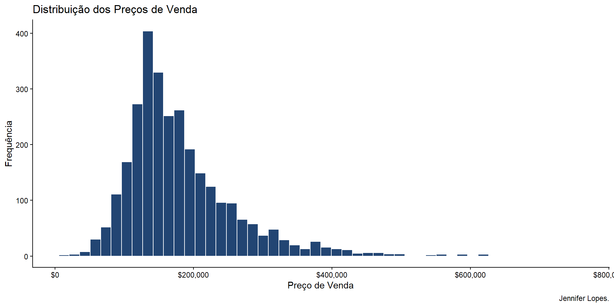
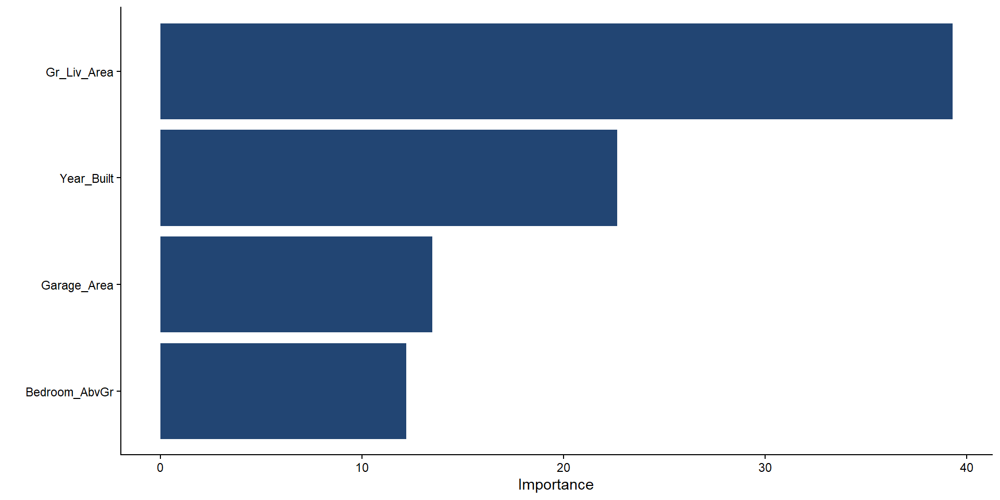

7. Tidymodels para Regressão em R
Análise de Machine Learning
☕ Assine o Café com R
Fique por dentro das aulas, conteúdos, newsletter!
Que cada gole desperte uma nova ideia.
Que cada script abra uma nova conversa.
Que o Café com R, se torne um ponto de encontro nosso!

Introdução ao Tidymodels
O tidymodels é uma coleção de pacotes para modelagem e machine learning seguindo os princípios do tidyverse.

Pacotes Principais
- rsample: divisão de dados
- recipes: pré-processamento
- parsnip: especificação de modelos
- workflows: pipelines completos
- yardstick: métricas de avaliação
- tune: otimização de hiperparâmetros
Instalação e Carregamento
O que é Regressão?
Regressão é uma técnica estatística para modelar a relação entre uma variável resposta (dependente) e uma ou mais variáveis preditoras (independentes).

Imagem: Thales Ferraz.
Objetivo: Prever valores numéricos contínuos.
Dataset Ames
O dataset Ames contém dados de vendas de imóveis em Ames, Iowa (EUA).
- 2930 observações
- 74 variáveis
- Preço de venda e características das casas
Carregando os Dados
# A tibble: 3 × 74
MS_SubClass MS_Zoning Lot_Frontage Lot_Area Street Alley Lot_Shape
<fct> <fct> <dbl> <int> <fct> <fct> <fct>
1 One_Story_1946_and_New… Resident… 141 31770 Pave No_A… Slightly…
2 One_Story_1946_and_New… Resident… 80 11622 Pave No_A… Regular
3 One_Story_1946_and_New… Resident… 81 14267 Pave No_A… Slightly…
# ℹ 67 more variables: Land_Contour <fct>, Utilities <fct>, Lot_Config <fct>,
# Land_Slope <fct>, Neighborhood <fct>, Condition_1 <fct>, Condition_2 <fct>,
# Bldg_Type <fct>, House_Style <fct>, Overall_Cond <fct>, Year_Built <int>,
# Year_Remod_Add <int>, Roof_Style <fct>, Roof_Matl <fct>,
# Exterior_1st <fct>, Exterior_2nd <fct>, Mas_Vnr_Type <fct>,
# Mas_Vnr_Area <dbl>, Exter_Cond <fct>, Foundation <fct>, Bsmt_Cond <fct>,
# Bsmt_Exposure <fct>, BsmtFin_Type_1 <fct>, BsmtFin_SF_1 <dbl>, …[1] 2930 74Variáveis Principais
Variável resposta: Sale_Price (preço de venda)
Preditoras importantes:
- Gr_Liv_Area: área habitável
- Year_Built: ano de construção
- Bldg_Type: tipo de construção
- Garage_Area: área da garagem
Análise Exploratória
Sale_Price Gr_Liv_Area Year_Built Garage_Area
Min. : 12789 Min. : 334 Min. :1872 Min. : 0.0
1st Qu.:129500 1st Qu.:1126 1st Qu.:1954 1st Qu.: 320.0
Median :160000 Median :1442 Median :1973 Median : 480.0
Mean :180796 Mean :1500 Mean :1971 Mean : 472.7
3rd Qu.:213500 3rd Qu.:1743 3rd Qu.:2001 3rd Qu.: 576.0
Max. :755000 Max. :5642 Max. :2010 Max. :1488.0 Distribuição do Preço
Preço x Área Habitável
ggplot(ames, aes(x = Gr_Liv_Area, y = Sale_Price)) +
geom_point(alpha = 0.5, color = "#4A6FA5") +
geom_smooth(method = "lm", color = "#6B4F4F", se = TRUE) +
scale_y_continuous(labels = scales::dollar) +
labs(title = "Preço x Área Habitável",
x = "Área Habitável (sq ft)", y = "Preço de Venda", caption = "Jennifer Lopes.") +
theme_classic()Preço x Tipo de Construção
ggplot(ames, aes(x = Bldg_Type, y = Sale_Price)) +
geom_boxplot(fill = "#6B4F4F", color = "#224573") +
scale_y_continuous(labels = scales::dollar) +
labs(title = "Preço x Tipo de Construção",
x = "Tipo de Construção", y = "Preço de Venda", caption = "Jennifer Lopes.") +
theme_classic() +
theme(axis.text.x = element_text(angle = 45, hjust = 1))Correlações
# Selecionar variáveis numéricas
numeric_vars <- ames %>%
select(Sale_Price, Gr_Liv_Area, Year_Built,
Garage_Area, Total_Bsmt_SF, Lot_Area)
# Matriz de correlação
cor_matrix <- cor(numeric_vars, use = "complete.obs")
round(cor_matrix[1, ], 3) Sale_Price Gr_Liv_Area Year_Built Garage_Area Total_Bsmt_SF
1.000 0.707 0.558 0.640 0.633
Lot_Area
0.267 Workflow do Tidymodels
- Divisão dos dados: treino/teste
- Pré-processamento: recipes
- Especificação do modelo: parsnip
- Criação do workflow: workflows
- Treinamento: fit
- Avaliação: yardstick
Passo 1: Divisão dos Dados
Passo 2: Criando uma Recipe
O que é uma Recipe?
Recipe define o pré-processamento dos dados:
step_normalize(): padronização (z-score)step_dummy(): variáveis dummy para categóricasstep_log(): transformação logarítmicastep_impute_*(): imputação de valores faltantesstep_pca(): análise de componentes principais
Passo 3: Especificação do Modelo
Passo 4: Criando o Workflow
# Criar workflow combinando recipe e modelo
ames_workflow <- workflow() %>%
add_recipe(ames_recipe) %>%
add_model(lm_model)
ames_workflow══ Workflow ════════════════════════════════════════════════════════════════════
Preprocessor: Recipe
Model: linear_reg()
── Preprocessor ────────────────────────────────────────────────────────────────
1 Recipe Step
• step_normalize()
── Model ───────────────────────────────────────────────────────────────────────
Linear Regression Model Specification (regression)
Computational engine: lm Passo 5: Treinamento
# Treinar o modelo
ames_fit <- ames_workflow %>%
fit(data = ames_train)
# Extrair coeficientes
ames_fit %>%
extract_fit_parsnip() %>%
tidy()# A tibble: 5 × 5
term estimate std.error statistic p.value
<chr> <dbl> <dbl> <dbl> <dbl>
1 (Intercept) 179210. 927. 193. 0
2 Gr_Liv_Area 50153. 1276. 39.3 3.56e-256
3 Year_Built 24381. 1076. 22.7 2.32e-102
4 Bedroom_AbvGr -13759. 1128. -12.2 3.64e- 33
5 Garage_Area 16127. 1195. 13.5 6.18e- 40Passo 6: Predições
# Fazer predições no conjunto de teste
ames_pred <- predict(ames_fit, ames_test)
# Combinar com valores reais
ames_results <- ames_test %>%
select(Sale_Price) %>%
bind_cols(ames_pred)
head(ames_results, 3)# A tibble: 3 × 2
Sale_Price .pred
<int> <dbl>
1 172000 137902.
2 195500 209084.
3 212000 226493.Visualizando Predições
ggplot(ames_results, aes(x = Sale_Price, y = .pred)) +
geom_point(alpha = 0.5, color = "#4A6FA5") +
geom_abline(slope = 1, intercept = 0,
color = "#224573", linetype = "dashed", linewidth = 1) +
scale_x_continuous(labels = scales::dollar) +
scale_y_continuous(labels = scales::dollar) +
labs(title = "Valores Reais x Preditos",
x = "Valor Real", y = "Valor Predito") +
theme_classic()Métricas de Avaliação
Entendendo as Métricas
RMSE (Root Mean Squared Error): Erro médio em unidades originais, penaliza erros grandes.
RSQ (R-squared): Proporção da variância explicada, varia de 0 a 1 (quanto maior, melhor).
MAE (Mean Absolute Error): Erro médio absoluto, mais robusto a outliers.
Resíduos
Gráfico de Resíduos
ggplot(ames_results, aes(x = .pred, y = residuals)) +
geom_point(alpha = 0.5, color = "#4A6FA5") +
geom_hline(yintercept = 0, color = "#224573",
linetype = "dashed", linewidth = 1) +
scale_x_continuous(labels = scales::dollar) +
scale_y_continuous(labels = scales::dollar) +
labs(title = "Gráfico de Resíduos",
x = "Valores Preditos", y = "Resíduos") +
theme_classic()Validação Cruzada
# Criar 10 folds
set.seed(123)
ames_folds <- vfold_cv(ames_train, v = 10)
# Ajustar modelo com validação cruzada
cv_results <- ames_workflow %>%
fit_resamples(ames_folds)
# Coletar métricas
collect_metrics(cv_results)# A tibble: 2 × 6
.metric .estimator mean n std_err .config
<chr> <chr> <dbl> <int> <dbl> <chr>
1 rmse standard 43250. 10 1871. pre0_mod0_post0
2 rsq standard 0.715 10 0.0164 pre0_mod0_post0Modelo com Mais Variáveis
# Recipe expandida
ames_recipe2 <- recipe(Sale_Price ~ Gr_Liv_Area + Year_Built +
Bedroom_AbvGr + Garage_Area + Total_Bsmt_SF +
Lot_Area + TotRms_AbvGrd,
data = ames_train) %>%
step_normalize(all_numeric_predictors())
# Novo workflow e treino
ames_workflow2 <- workflow() %>%
add_recipe(ames_recipe2) %>%
add_model(lm_model)
ames_fit2 <- ames_workflow2 %>%
fit(data = ames_train)Comparando Modelos
# Predições modelo 2
ames_results2 <- ames_test %>%
select(Sale_Price) %>%
bind_cols(predict(ames_fit2, ames_test))
# Comparação
bind_rows(
ames_results %>% metrics(truth = Sale_Price, estimate = .pred) %>% mutate(model = "Modelo 1"),
ames_results2 %>% metrics(truth = Sale_Price, estimate = .pred) %>% mutate(model = "Modelo 2")
) %>%
select(model, .metric, .estimate) %>%
filter(.metric == "rmse")# A tibble: 2 × 3
model .metric .estimate
<chr> <chr> <dbl>
1 Modelo 1 rmse 40030.
2 Modelo 2 rmse 36715.Regressão Ridge
O que é Ridge?
Ridge Regression adiciona penalização L2:
- Reduz coeficientes (mas não a zero)
- Previne overfitting
- Útil com multicolinearidade
- penalty: força da regularização
- mixture = 0: Ridge puro
Regressão Lasso
O que é Lasso?
Lasso Regression adiciona penalização L1:
- Pode zerar coeficientes
- Realiza seleção de variáveis
- Produz modelos esparsos
- mixture = 1: Lasso puro
Comparação Final
# Métricas de todos os modelos
ridge_results <- ames_test %>%
select(Sale_Price) %>%
bind_cols(predict(ridge_fit, ames_test))
lasso_results <- ames_test %>%
select(Sale_Price) %>%
bind_cols(predict(lasso_fit, ames_test))
bind_rows(
ames_results %>% metrics(truth = Sale_Price, estimate = .pred) %>% mutate(model = "Linear"),
ridge_results %>% metrics(truth = Sale_Price, estimate = .pred) %>% mutate(model = "Ridge"),
lasso_results %>% metrics(truth = Sale_Price, estimate = .pred) %>% mutate(model = "Lasso")
) %>%
select(model, .metric, .estimate) %>%
tidyr::pivot_wider(names_from = .metric, values_from = .estimate)# A tibble: 3 × 4
model rmse rsq mae
<chr> <dbl> <dbl> <dbl>
1 Linear 40030. 0.737 28412.
2 Ridge 36929. 0.779 24728.
3 Lasso 36749. 0.778 24708.Transformação Logarítmica
# Criar datasets para treino (corrigido)
ames_train_log <- ames_train %>%
mutate(Sale_Price_Log = log10(Sale_Price))
# Recipe COM log na variável dependente
log_recipe <- recipe(Sale_Price_Log ~ Gr_Liv_Area + Year_Built +
Garage_Area,
data = ames_train_log) %>%
step_normalize(all_numeric_predictors())Modelo com Transformação Log
# Workflow com log
log_workflow <- workflow() %>%
add_recipe(log_recipe) %>%
add_model(lm_model)
# Treinar
log_fit <- log_workflow %>%
fit(ames_train_log)
# Predições (reverter para escala original)
ames_test_log <- ames_test %>%
mutate(Sale_Price_Log = log10(Sale_Price))
log_results <- ames_test %>%
select(Sale_Price) %>%
bind_cols(predict(log_fit, ames_test_log)) %>%
mutate(.pred_original = 10^.pred)
# Métricas
log_results %>%
metrics(truth = Sale_Price, estimate = .pred_original)# A tibble: 3 × 3
.metric .estimator .estimate
<chr> <chr> <dbl>
1 rmse standard 45325.
2 rsq standard 0.673
3 mae standard 27840. Random Forest
Avaliando Random Forest
# Predições e métricas
rf_results <- ames_test %>%
select(Sale_Price) %>%
bind_cols(predict(rf_fit, ames_test))
rf_results %>%
metrics(truth = Sale_Price, estimate = .pred)# A tibble: 3 × 3
.metric .estimator .estimate
<chr> <chr> <dbl>
1 rmse standard 30109.
2 rsq standard 0.851
3 mae standard 19440. Importância das Variáveis
Predições em Novos Dados
Salvando Modelos
Boas Práticas
- Sempre dividir dados antes de processar
- Usar validação cruzada
- Testar múltiplos modelos
- Verificar suposições do modelo
- Documentar decisões
- Considerar contexto do negócio
Conclusão
Tidymodels oferece:
- Framework consistente e intuitivo
- Facilita experimentação
- Reduz erros comuns
- Melhora reprodutibilidade
- Integração com tidyverse
Regressão é fundamental para análise preditiva!
Referências
Documentação tidymodels
Pacotes tidymodels
Tutoriais disponíveis
Livro: Tidy Modeling with R

Obrigada!

Imagem: Allison Horst.
Continue praticando e explorando!
Esta apresentação é parte do projeto Café com R!É OPEN, USE, COMPARTILHE!
Happy modeling!
☕ Assine o Café com R
Que cada gole desperte uma nova ideia.
Que cada script abra uma nova conversa.
Que o Café com R, se torne um ponto de encontro nosso!

Jennifer Lopes • Machine Learning com R